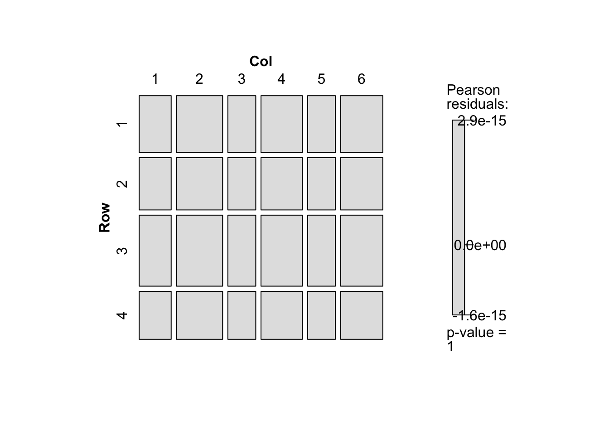

Warning: The `tidy()` method for objects of class `gnm` is not maintained by the broom team, and is only supported through the `glm` tidier method. Please be cautious in interpreting and reporting broom output.
This warning is displayed once per session.
d <- d |>mutate(O_Freq = fit_O$fitted.values,S_Freq = fit_S$fitted.values)d |>xtabs(Freq ~ Row + Col, data = _) |>mosaic(shade =TRUE)
d |>xtabs(O_Freq ~ Row + Col, data = _) |>mosaic(shade =TRUE)

d |>xtabs(S_Freq ~ Row + Col, data = _) |>mosaic(shade =TRUE)
fit_O$fitted.valuesの代わりにpredict(fit_O, type = "response")としても良い．type = "response"を忘れないようにする．
モザイクプロット
gnmパッケージには，mentalHealthが用意されているのでこれを使ってみる．
mentalHealth
count SES MHS
1 64 A well
2 94 A mild
3 58 A moderate
4 46 A impaired
5 57 B well
6 94 B mild
7 54 B moderate
8 40 B impaired
9 57 C well
10 105 C mild
11 65 C moderate
12 60 C impaired
13 72 D well
14 141 D mild
15 77 D moderate
16 94 D impaired
17 36 E well
18 97 E mild
19 54 E moderate
20 78 E impaired
21 21 F well
22 71 F mild
23 54 F moderate
24 71 F impaired
xtabsは集計データからクロス表を作成する際に用いる．xtabs(度数 ~ 行変数 + 列変数, data = データ名)とすればよい．mentalHealthではcountが度数を示している．
tab_mentalHealth <-xtabs(count ~ SES + MHS, data = mentalHealth)tab_mentalHealth
MHS
SES well mild moderate impaired
A 64 94 58 46
B 57 94 54 40
C 57 105 65 60
D 72 141 77 94
E 36 97 54 78
F 21 71 54 71
Call:
gnm(formula = count ~ SES + MHS + Mult(1, SES, MHS), family = poisson,
data = mentalHealth, start = c(coef(O), 1, mult1))
Deviance Residuals:
Min 1Q Median 3Q Max
-0.87231 -0.30983 0.01026 0.29898 0.87866
Coefficients:
Estimate Std. Error z value Pr(>|z|)
(Intercept) 3.97986 NA NA NA
SESB -0.06671 NA NA NA
SESC 0.05286 NA NA NA
SESD 0.31721 NA NA NA
SESE -0.13824 NA NA NA
SESF -0.42641 NA NA NA
MHSmild 0.63608 NA NA NA
MHSmoderate 0.11422 NA NA NA
MHSimpaired 0.09713 NA NA NA
Mult(., SES, MHS). 0.56928 NA NA NA
Mult(1, ., MHS).SESA -0.40622 NA NA NA
Mult(1, ., MHS).SESB -0.41074 NA NA NA
Mult(1, ., MHS).SESC -0.03823 NA NA NA
Mult(1, ., MHS).SESD 0.15940 NA NA NA
Mult(1, ., MHS).SESE 0.64757 NA NA NA
Mult(1, ., MHS).SESF 1.04863 NA NA NA
Mult(1, SES, .).MHSwell -0.73506 NA NA NA
Mult(1, SES, .).MHSmild 0.17046 NA NA NA
Mult(1, SES, .).MHSmoderate 0.33387 NA NA NA
Mult(1, SES, .).MHSimpaired 1.08597 NA NA NA
Std. Error is NA where coefficient has been constrained or is unidentified
Residual deviance: 3.5706 on 8 degrees of freedom
AIC: 179.74
Number of iterations: 14
tidy(RC1)
# A tibble: 20 × 5
term estimate std.error statistic p.value
<chr> <dbl> <dbl> <dbl> <dbl>
1 (Intercept) 3.98 NA NA NA
2 SESB -0.0667 NA NA NA
3 SESC 0.0529 NA NA NA
4 SESD 0.317 NA NA NA
5 SESE -0.138 NA NA NA
6 SESF -0.426 NA NA NA
7 MHSmild 0.636 NA NA NA
8 MHSmoderate 0.114 NA NA NA
9 MHSimpaired 0.0971 NA NA NA
10 Mult(., SES, MHS). 0.569 NA NA NA
11 Mult(1, ., MHS).SESA -0.406 NA NA NA
12 Mult(1, ., MHS).SESB -0.411 NA NA NA
13 Mult(1, ., MHS).SESC -0.0382 NA NA NA
14 Mult(1, ., MHS).SESD 0.159 NA NA NA
15 Mult(1, ., MHS).SESE 0.648 NA NA NA
16 Mult(1, ., MHS).SESF 1.05 NA NA NA
17 Mult(1, SES, .).MHSwell -0.735 NA NA NA
18 Mult(1, SES, .).MHSmild 0.170 NA NA NA
19 Mult(1, SES, .).MHSmoderate 0.334 NA NA NA
20 Mult(1, SES, .).MHSimpaired 1.09 NA NA NA
Initialising
Running start-up iterations..
Running main iterations..............................
Done
summary(RC)
Call:
gnm(formula = Freq ~ polviews + fefam + Mult(1, polviews, fefam),
family = poisson, data = freq_tab_2.3A, start = c(coef(O),
NA, mult1), tolerance = 1e-12)
Deviance Residuals:
Min 1Q Median 3Q Max
-1.07428 -0.27239 0.03038 0.36792 1.03721
Coefficients:
Estimate Std. Error z value Pr(>|z|)
(Intercept) 2.97067 NA NA NA
polviews2 1.38106 NA NA NA
polviews3 1.40499 NA NA NA
polviews4 2.54490 NA NA NA
polviews5 1.63588 NA NA NA
polviews6 1.54832 NA NA NA
polviews7 -0.21523 NA NA NA
fefam2 0.86521 NA NA NA
fefam3 0.37157 NA NA NA
fefam4 -0.81900 NA NA NA
Mult(., polviews, fefam). 0.11476 NA NA NA
Mult(1, ., fefam).polviews1 -2.23657 NA NA NA
Mult(1, ., fefam).polviews2 -1.70908 NA NA NA
Mult(1, ., fefam).polviews3 -1.00463 NA NA NA
Mult(1, ., fefam).polviews4 0.08226 NA NA NA
Mult(1, ., fefam).polviews5 0.54970 NA NA NA
Mult(1, ., fefam).polviews6 2.07831 NA NA NA
Mult(1, ., fefam).polviews7 3.38495 NA NA NA
Mult(1, polviews, .).fefam1 -2.74560 NA NA NA
Mult(1, polviews, .).fefam2 -0.22589 NA NA NA
Mult(1, polviews, .).fefam3 1.73823 NA NA NA
Mult(1, polviews, .).fefam4 2.66996 NA NA NA
Std. Error is NA where coefficient has been constrained or is unidentified
Residual deviance: 8.0718 on 10 degrees of freedom
AIC: 215.43
Number of iterations: 30
tidy(RC)
# A tibble: 22 × 5
term estimate std.error statistic p.value
<chr> <dbl> <dbl> <dbl> <dbl>
1 (Intercept) 2.97 NA NA NA
2 polviews2 1.38 NA NA NA
3 polviews3 1.40 NA NA NA
4 polviews4 2.54 NA NA NA
5 polviews5 1.64 NA NA NA
6 polviews6 1.55 NA NA NA
7 polviews7 -0.215 NA NA NA
8 fefam2 0.865 NA NA NA
9 fefam3 0.372 NA NA NA
10 fefam4 -0.819 NA NA NA
# ℹ 12 more rows
Initialising
Running start-up iterations..
Running main iterations.........................................................
...........................
Done
summary(RC2)
Call:
gnm(formula = Freq ~ polviews + fefam + Mult(1, polviews, fefam,
inst = 1) + Mult(1, polviews, fefam, inst = 2), family = poisson,
data = freq_tab_2.3A, start = c(coef(O), NA, mult2[, 1],
NA, mult2[, 2]), tolerance = 1e-12)
Deviance Residuals:
Min 1Q Median 3Q Max
-0.500439 -0.068726 -0.002705 0.066147 0.535693
Coefficients:
Estimate Std. Error z value Pr(>|z|)
(Intercept) 2.993287 NA NA NA
polviews2 1.436412 NA NA NA
polviews3 1.398908 NA NA NA
polviews4 2.518065 NA NA NA
polviews5 1.564082 NA NA NA
polviews6 1.534299 NA NA NA
polviews7 -0.133562 NA NA NA
fefam2 0.814972 NA NA NA
fefam3 0.369393 NA NA NA
fefam4 -0.825633 NA NA NA
Mult(., polviews, fefam, inst = 1). 0.111566 NA NA NA
Mult(1, ., fefam, inst = 1).polviews1 -2.370011 NA NA NA
Mult(1, ., fefam, inst = 1).polviews2 -1.718197 NA NA NA
Mult(1, ., fefam, inst = 1).polviews3 -1.055282 NA NA NA
Mult(1, ., fefam, inst = 1).polviews4 0.094489 NA NA NA
Mult(1, ., fefam, inst = 1).polviews5 0.651356 NA NA NA
Mult(1, ., fefam, inst = 1).polviews6 2.082776 NA NA NA
Mult(1, ., fefam, inst = 1).polviews7 3.020457 NA NA NA
Mult(1, polviews, ., inst = 1).fefam1 -2.548941 NA NA NA
Mult(1, polviews, ., inst = 1).fefam2 -0.333340 NA NA NA
Mult(1, polviews, ., inst = 1).fefam3 1.824525 NA NA NA
Mult(1, polviews, ., inst = 1).fefam4 2.789907 NA NA NA
Mult(., polviews, fefam, inst = 2). 0.064972 NA NA NA
Mult(1, ., fefam, inst = 2).polviews1 -0.129058 NA NA NA
Mult(1, ., fefam, inst = 2).polviews2 1.061518 NA NA NA
Mult(1, ., fefam, inst = 2).polviews3 -0.214994 NA NA NA
Mult(1, ., fefam, inst = 2).polviews4 -0.595091 NA NA NA
Mult(1, ., fefam, inst = 2).polviews5 -1.469833 NA NA NA
Mult(1, ., fefam, inst = 2).polviews6 -0.267529 NA NA NA
Mult(1, ., fefam, inst = 2).polviews7 1.608264 NA NA NA
Mult(1, polviews, ., inst = 2).fefam1 0.298457 NA NA NA
Mult(1, polviews, ., inst = 2).fefam2 -1.828478 NA NA NA
Mult(1, polviews, ., inst = 2).fefam3 0.195655 NA NA NA
Mult(1, polviews, ., inst = 2).fefam4 0.002679 NA NA NA
Std. Error is NA where coefficient has been constrained or is unidentified
Residual deviance: 1.3691 on 4 degrees of freedom
AIC: 220.72
Number of iterations: 84
tidy(RC2)
# A tibble: 34 × 5
term estimate std.error statistic p.value
<chr> <dbl> <dbl> <dbl> <dbl>
1 (Intercept) 2.99 NA NA NA
2 polviews2 1.44 NA NA NA
3 polviews3 1.40 NA NA NA
4 polviews4 2.52 NA NA NA
5 polviews5 1.56 NA NA NA
6 polviews6 1.53 NA NA NA
7 polviews7 -0.134 NA NA NA
8 fefam2 0.815 NA NA NA
9 fefam3 0.369 NA NA NA
10 fefam4 -0.826 NA NA NA
# ℹ 24 more rows
Initialising
Running start-up iterations..
Running main iterations...........
Done
summary(RC3)
Call:
gnm(formula = Freq ~ polviews + fefam + Mult(1, polviews, fefam,
inst = 1) + Mult(1, polviews, fefam, inst = 2) + Mult(1,
polviews, fefam, inst = 3), family = poisson, data = freq_tab_2.3A,
start = c(coef(O), NA, mult3[, 1], NA, mult3[, 2], NA, mult3[,
3]), tolerance = 1e-12)
Deviance Residuals:
Min 1Q Median 3Q Max
0 0 0 0 0
Coefficients:
Estimate Std. Error z value Pr(>|z|)
(Intercept) 2.98832 NA NA NA
polviews2 1.45668 NA NA NA
polviews3 1.38302 NA NA NA
polviews4 2.52059 NA NA NA
polviews5 1.58491 NA NA NA
polviews6 1.51818 NA NA NA
polviews7 -0.10812 NA NA NA
fefam2 0.81254 NA NA NA
fefam3 0.35325 NA NA NA
fefam4 -0.80539 NA NA NA
Mult(., polviews, fefam, inst = 1). 0.11105 NA NA NA
Mult(1, ., fefam, inst = 1).polviews1 -2.36488 NA NA NA
Mult(1, ., fefam, inst = 1).polviews2 -1.70985 NA NA NA
Mult(1, ., fefam, inst = 1).polviews3 -1.02644 NA NA NA
Mult(1, ., fefam, inst = 1).polviews4 0.10832 NA NA NA
Mult(1, ., fefam, inst = 1).polviews5 0.61151 NA NA NA
Mult(1, ., fefam, inst = 1).polviews6 2.15910 NA NA NA
Mult(1, ., fefam, inst = 1).polviews7 2.95936 NA NA NA
Mult(1, polviews, ., inst = 1).fefam1 -2.41740 NA NA NA
Mult(1, polviews, ., inst = 1).fefam2 -0.28415 NA NA NA
Mult(1, polviews, ., inst = 1).fefam3 2.05381 NA NA NA
Mult(1, polviews, ., inst = 1).fefam4 2.43636 NA NA NA
Mult(., polviews, fefam, inst = 2). 0.06452 NA NA NA
Mult(1, ., fefam, inst = 2).polviews1 -0.12647 NA NA NA
Mult(1, ., fefam, inst = 2).polviews2 1.13121 NA NA NA
Mult(1, ., fefam, inst = 2).polviews3 -0.29985 NA NA NA
Mult(1, ., fefam, inst = 2).polviews4 -0.60482 NA NA NA
Mult(1, ., fefam, inst = 2).polviews5 -1.37958 NA NA NA
Mult(1, ., fefam, inst = 2).polviews6 -0.41755 NA NA NA
Mult(1, ., fefam, inst = 2).polviews7 1.74634 NA NA NA
Mult(1, polviews, ., inst = 2).fefam1 0.38993 NA NA NA
Mult(1, polviews, ., inst = 2).fefam2 -1.83914 NA NA NA
Mult(1, polviews, ., inst = 2).fefam3 0.21225 NA NA NA
Mult(1, polviews, ., inst = 2).fefam4 -0.11423 NA NA NA
Mult(., polviews, fefam, inst = 3). 0.05616 NA NA NA
Mult(1, ., fefam, inst = 3).polviews1 2.23238 NA NA NA
Mult(1, ., fefam, inst = 3).polviews2 0.46917 NA NA NA
Mult(1, ., fefam, inst = 3).polviews3 2.19320 NA NA NA
Mult(1, ., fefam, inst = 3).polviews4 0.39281 NA NA NA
Mult(1, ., fefam, inst = 3).polviews5 -0.90419 NA NA NA
Mult(1, ., fefam, inst = 3).polviews6 -0.22218 NA NA NA
Mult(1, ., fefam, inst = 3).polviews7 -2.57455 NA NA NA
Mult(1, polviews, ., inst = 3).fefam1 0.34732 NA NA NA
Mult(1, polviews, ., inst = 3).fefam2 0.17172 NA NA NA
Mult(1, polviews, ., inst = 3).fefam3 0.71728 NA NA NA
Mult(1, polviews, ., inst = 3).fefam4 -1.25788 NA NA NA
Std. Error is NA where coefficient has been constrained or is unidentified
Residual deviance: -3.1086e-15 on 0 degrees of freedom
AIC: 227.35
Number of iterations: 11
tidy(RC3)
# A tibble: 46 × 5
term estimate std.error statistic p.value
<chr> <dbl> <dbl> <dbl> <dbl>
1 (Intercept) 2.99 NA NA NA
2 polviews2 1.46 NA NA NA
3 polviews3 1.38 NA NA NA
4 polviews4 2.52 NA NA NA
5 polviews5 1.58 NA NA NA
6 polviews6 1.52 NA NA NA
7 polviews7 -0.108 NA NA NA
8 fefam2 0.813 NA NA NA
9 fefam3 0.353 NA NA NA
10 fefam4 -0.805 NA NA NA
# ℹ 36 more rows
Fitting independence model...
Fitting model with 1 dimension...
Initialising
Running start-up iterations..
Running main iterations........
Done
Fitting model with 2 dimensions...
Initialising
Running start-up iterations..
Running main iterations...............................
Done
Fitting model with 3 dimensions...
Initialising
Running start-up iterations..
Running main iterations...
Done
Initialising
Running start-up iterations..
Running main iterations............
Done
Call:
rc(tab = tab_2.3A, nd = 1)
Intrinsic association coefficients:
Dim1
0.257
Normalized row scores (Rows):
A B C D E F G
1.8206 1.4153 0.8741 0.0389 -0.3202 -1.4947 -2.4987
Normalized column scores (Columns):
A B C D
1.658 0.192 -0.951 -1.493
Normalization weights: marginal
Deviance: 8.071819
Pearson chi-squared: 8.168769
Dissimilarity index: 1.767308%
Residual df: 10
BIC: -73.35754
AIC: -11.92818
rc(tab_2.3A, nd =2)
Initialising
Running start-up iterations..
Running main iterations............................
Done
Call:
rc(tab = tab_2.3A, nd = 2)
Intrinsic association coefficients:
Dim1 Dim2
0.245 0.048
Normalized row scores (Rows):
Dim1 Dim2
A 1.9332 0.1608
B 1.3846 -1.5665
C 0.9161 0.0381
D 0.0375 0.3428
E -0.3632 1.4237
F -1.5171 -0.4611
G -2.3120 -3.1663
Normalized column scores (Columns):
Dim1 Dim2
A 1.625 -1.205
B 0.220 1.114
C -0.958 -0.751
D -1.536 -0.480
Normalization weights: marginal
Deviance: 1.369091
Pearson chi-squared: 1.369503
Dissimilarity index: 0.4963921%
Residual df: 4
BIC: -31.20265
AIC: -6.630909
rc(tab_2.3A, nd =3)
Initialising
Running start-up iterations..
Running main iterations......
Done
Call:
rc(tab = tab_2.3A, nd = 3)
Intrinsic association coefficients:
Dim1 Dim2 Dim3
0.2455 0.0485 0.0204
Normalized row scores (Rows):
Dim1 Dim2 Dim3
A 1.9417 0.1575 0.6432
B 1.3708 -1.5534 -1.0724
C 0.9319 0.0444 1.6635
D 0.0365 0.3379 0.0661
E -0.3566 1.3877 -1.4225
F -1.5358 -0.3972 0.9283
G -2.2540 -3.3219 -1.3514
Normalized column scores (Columns):
Dim1 Dim2 Dim3
A 1.6240 -1.2103 -0.3173
B 0.2205 1.1151 0.0269
C -0.9567 -0.7330 1.0506
D -1.5401 -0.5267 -2.7219
Normalization weights: marginal
Deviance: -4.507505e-14
Pearson chi-squared: 2.138457e-27
Dissimilarity index: 3.201213e-14%
Residual df: 0
BIC: -4.507505e-14
AIC: -4.507505e-14
Running main iterations.........................................................
................................................................................
................................................................................
................................................................................
................................................................................
................................................................................
...........................................
Done
Warning in gnmFit(modelTools = modelTools, y = y, constrain = constrain, : Fitting algorithm has either not converged or converged
to a non-solution of the likelihood equations.
Use exitInfo() for numerical details of last iteration.
Fitting independence model...
Fitting model with 1 dimension...
Initialising
Running start-up iterations..
Running main iterations.........................................................
...
Done
Fitting model with 2 dimensions...
Initialising
Running start-up iterations..
Running main iterations........
Done
Fitting model with 3 dimensions...
Initialising
Running start-up iterations..
Running main iterations......
Done
# (1) OO <- d |>gnm(Freq ~ Row + Col,family = poisson,data = _)# (2) UU <- d |>gnm(Freq ~ Row + Col + U:V,family = poisson,data = _)# (3) RR <- d |>gnm(Freq ~ Row + Col + Row:V,family = poisson,data = _)# (4) CC <- d |>gnm(Freq ~ Row + Col + Col:U,family = poisson,data = _)# (5) RCRC <- d |>gnm(Freq ~ Row + Col +Mult(1, Row, Col),family = poisson,data = _)
Initialising
Running start-up iterations..
Running main iterations........
Done
# (6) U + RCUplusRC <- d |>gnm(Freq ~ Row + Col + U:V +Mult(1, Row, Col),family = poisson,data = _)
Initialising
Running start-up iterations..
Running main iterations..............
Done
# (7) R + RCRplusRC <- d |>gnm(Freq ~ Row + Col + Row:V +Mult(1, Row, Col),family = poisson,data = _)
Initialising
Running start-up iterations..
Running main iterations...............
Done
# (8) C + RCCplusRC <- d |>gnm(Freq ~ Row + Col + Col:U +Mult(1, Row, Col),family = poisson,data = _)
Initialising
Running start-up iterations..
Running main iterations....
Done
# (9) R + C + RCRplusCplusRC <- d |>gnm(Freq ~ Row + Col + Row:V + Col:U +Mult(1, Row, Col),family = poisson,data = _)
Initialising
Running start-up iterations..
Running main iterations..
Done
# (10) R + CRplusC <- d |>gnm(Freq ~ Row + Col + Row:V + Col:U,family = poisson,data = _)list(O, U, R, C, RC, UplusRC, RplusRC, CplusRC, RplusCplusRC, RplusC) |>map_dfr(glance, id ="Model")
# A tibble: 10 × 8
null.deviance df.null logLik AIC BIC deviance df.residual nobs
<dbl> <dbl> <dbl> <dbl> <dbl> <dbl> <int> <int>
1 NA NA -53.0 120. 125. 46.9 9 16
2 NA NA -35.5 86.9 93.1 11.9 8 16
3 NA NA -34.5 88.9 96.7 9.88 6 16
4 NA NA -31.7 83.4 91.1 4.35 6 16
5 NA NA -30.4 84.8 94.1 1.74 4 16
6 NA NA -30.3 86.7 96.7 1.60 3 16
7 NA NA -30.3 88.6 99.4 1.49 2 16
8 NA NA -29.5 87.1 97.9 0.00771 2 16
9 NA NA -29.5 89.1 101. 0.00000129 1 16
10 NA NA -30.9 85.9 95.2 2.81 4 16
fit <-gnm(Freq ~ Row + Col +Mult(1, Row, Col),family = poisson,data = d)
Initialising
Running start-up iterations..
Running main iterations........
Done
summary(fit)
Call:
gnm(formula = Freq ~ Row + Col + Mult(1, Row, Col), family = poisson,
data = d)
Deviance Residuals:
Min 1Q Median 3Q Max
-0.51267 -0.25916 -0.03574 0.25369 0.66120
Coefficients:
Estimate Std. Error z value Pr(>|z|)
(Intercept) 2.2607 NA NA NA
Row2 -0.1177 NA NA NA
Row3 0.6089 NA NA NA
Row4 0.1565 NA NA NA
Col2 -0.5289 NA NA NA
Col3 -1.1438 NA NA NA
Col4 -0.7842 NA NA NA
Mult(., Row, Col). -10.0887 NA NA NA
Mult(1, ., Col).Row1 0.4145 NA NA NA
Mult(1, ., Col).Row2 0.3209 NA NA NA
Mult(1, ., Col).Row3 -0.1926 NA NA NA
Mult(1, ., Col).Row4 -0.4234 NA NA NA
Mult(1, Row, .).Col1 0.1759 NA NA NA
Mult(1, Row, .).Col2 0.0975 NA NA NA
Mult(1, Row, .).Col3 -0.2997 NA NA NA
Mult(1, Row, .).Col4 -0.1962 NA NA NA
Std. Error is NA where coefficient has been constrained or is unidentified
Residual deviance: 1.7442 on 4 degrees of freedom
AIC: 84.814
Number of iterations: 8
library(DescTools)CorPolychor(d_ind$U, d_ind$V, ML =TRUE)
[1] -0.5326198
# summary(fit)
Call:
gnm(formula = Freq ~ Row + Col + Mult(1, Row, Col), constrain = 9:16,
constrainTo = c(mu$qvframe[, 1], -1 * nu$qvframe[, 1]), family = poisson,
data = d)
Deviance Residuals:
Min 1Q Median 3Q Max
-0.51267 -0.25916 -0.03574 0.25369 0.66120
Coefficients:
Estimate Std. Error z value Pr(>|z|)
(Intercept) 2.2730 0.2679 8.484 < 2e-16 ***
Row2 -0.1064 0.2823 -0.377 0.706328
Row3 0.6827 0.2698 2.530 0.011397 *
Row4 0.2584 0.2844 0.908 0.363656
Col2 -0.5588 0.2278 -2.454 0.014141 *
Col3 -1.3258 0.3082 -4.301 1.70e-05 ***
Col4 -0.9266 0.2677 -3.462 0.000536 ***
Mult(., Row, Col). 0.6577 0.1127 5.836 5.35e-09 ***
Mult(1, ., Col).Row1 1.3355 NA NA NA
Mult(1, ., Col).Row2 1.0593 NA NA NA
Mult(1, ., Col).Row3 -0.4565 NA NA NA
Mult(1, ., Col).Row4 -1.1376 NA NA NA
Mult(1, Row, .).Col1 -0.8514 NA NA NA
Mult(1, Row, .).Col2 -0.4441 NA NA NA
Mult(1, Row, .).Col3 1.6203 NA NA NA
Mult(1, Row, .).Col4 1.0823 NA NA NA
---
Signif. codes: 0 '***' 0.001 '**' 0.01 '*' 0.05 '.' 0.1 ' ' 1
(Dispersion parameter for poisson family taken to be 1)
Std. Error is NA where coefficient has been constrained or is unidentified
Residual deviance: 1.7442 on 8 degrees of freedom
AIC: 76.814
Number of iterations: 0
Initialising
Running start-up iterations..
Running main iterations...........
Done
Computing bootstrap standard errors...
.
Warning in jackboot(se, ncpus, nreplicates, tab, model, assoc1 =
getS3method("assoc", : 3 model replicates failed and their results will be
skipped. Standard errors will not be completely accurate. Consider raising the
value of iterMax.
$phi
Dim1
[1,] 0.6576832
$row
, , 1
Dim1
A 1.3354659
B 1.0592602
C -0.4564886
D -1.1376492
$col
, , 1
Dim1
A -0.8513968
B -0.4440776
C 1.6203060
D 1.0822643
$diagonal
numeric(0)
$weighting
[1] "marginal"
$row.weights
[,1]
A 29
B 23
C 46
D 37
$col.weights
[,1]
A 58
B 30
C 22
D 25
$vars
[1] "Rows" "Columns"
attr(,"class")
[1] "assoc.rc" "assoc"
Goodman, Leo A. 1981. “Association Models and Canonical Correlation in the Analysis of Cross-Classifications Having Ordered Categories.”Journal of the American Statistical Association 76 (374): 320–34. https://doi.org/10.1080/01621459.1981.10477651.